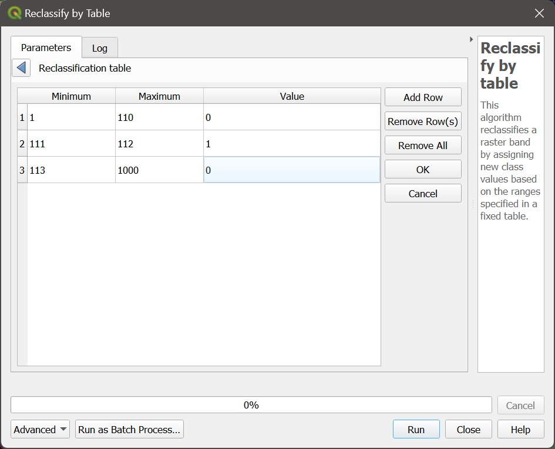

6 Lab 6: The raster calculator and other rastery bits
….
6.1 Before you start!
- Go through the Week 3 preparatory session on Canvas, and watch the seminar recording if you have missed it. Also make sure you have completed all labs prior to this one.
6.2 Guided Exercise 1 - Using the Raster Calculator
In this exercise, we will use the layers from the previous lab to learn about raster statics and the raster calculator. Then we will learn about mosaicking, stacking and adjusting the contrast of raster layers, and see the effects of using different resampling methods when working with rasters.
6.2.1 Recovering your data
At the end of last week’s lab you saved the final results of your project as a zipfile. Retrieve this file, extract the contents, and re-open your project. It should have the four layers in it:
- Vector polygon of the Island of Great Britain
- Raster file of the SRTM digital elevation model (reprojected to EPSG27700 and masked to the GB island)
- Raster file of the CORINE digital elevation modelland cover dataset (reprojected to EPSG27700 and masked to the GB island)
- Raster file of the BIOCLIM climatic dataset (reprojected to EPSG27700 and masked to the GB island)
6.2.2 Gobal raster statistics
Winter is coming, and you want to escape the worst of the cold and rain. You therefore decide to use your GIS skills to find the ideal place to spend your winter - an urban or periurban place with the lowest precipitation and highest minimum temperatures in the UK.
To get started, you want to know the range of precipitation and temperature values for the entire island, using the BIOCLIM data. If this was a vector dataset, you would use Statistical Summary Tool - but it is a raster. What would be the equivalent operation?
The tool we need is called
Raster Layer Statistics, but it is not located in theRastermenu. Instead, we need to launch theProcessingpanel ( ADD ICON). This panel contains a lot of additional GIS functions, and we will use if often now.Once you have
Processingpanel open, you can either search forRaster Layer Statisticsor find it under rheRaster analysisheading. Double click on it to launch the tool window. It should look like this:

Looking at the BIOCLIM data description, you need to get statistics for BIO6 - Minimum Temperature of the Coldest Month, and BIO12 - Annual Precipitation. The BIO variables are ordered in the file, so band 6 is BIO6, and Band 12 is BIO12.
- In the
Raster Layer Statisticswindow, select the BIOCLIM layer asInput Layerandband 06as band number. You can keep the results as a temporaty file.Runit andClosethe window. A new panel will have appeared under theProcessingpanel, calledResults Viewer. It will have an entry calledStatistics. Double click on it and take note of the minimum and maximum BIO6 values (-75 and 33).
Do these values seem too extreme for the UK? What is going on here?
- Now repeat the process to get the Min and Max values for BIO12 (532 and 2311)
What are the units for precipitation?
6.2.3 Per-pixel calculations with the raster calculator
Although it is easy enough to covert the temperature pixel values to Celsius in our heads, it would be useful to have the data in the proper units, especially if we want to map it later. Let us use the Raster Calculator to apply the conversion factor to all pixels.
- Go to
Raster > Raster Calculatoror click on the () button to launch the calculator. It will look like this:

The general idea is similar to the Field Calculator, with a slightly different layout. The top right panel lists all raster bands in the project (so UK_bioclim_BG_GBmasked@19 means band 19 of the BIOCLIM raster). The top right panel lets us pick some options for our raster creation, and the bottom panel let’s us type expressions.
We need to divide all BIO6 temperature values by 10. Double click on the BIOCLIM band 6 in the bands list to add it to the expression panel, and then add the division by
10. On my project, the expression panel looks like"UK_bioclim_BG_GBmasked@6" / 10, but your BIOCLIM layer may not be named the same as mine. Note that the bottom of the expression panel should sayExpression Valid. If it saysExpression Invalid, check your typing (did you use the double quotes?)For
Output Layer, click on the...button and pick a folder so save the new file. Name itUK_bioclim_BG_GBmasked_BIO6.tif. Leave the rest as default and click inOK.
How many bands has your newly created file?
Every time you enter an expression involving a raster band and a single number in the Raster Calculator you are telling QGIS to apply the same expression to each pixel of that band. In our case, we dividided all pixel values by 10.
6.2.4 Boolean (logical) operations with the raster calculator
The Raster Calculator also fulfills the role of the vector Select by expression tool for rasters. The result of any raster logical operation is either 1 (True) or 0 (False), i.e. a binary raster, sometimes called a raster mask.
Let us find the warmer places in Great Britain. Our highest minimum temperature of the coldest month (BIO6) value was 3.3 degrees. Let us limit our search to any place that doesn’t go below 0 Celsius.
- Open the
Raster Calculatoragain, and this time use the expression" UK_bioclim_BG_GBmask_BIO6@1" > 0. Save it in a proper folder with the nameGB_mintemp_gt_0.tif(gt for ‘greater than’) and run the calculation. You should get something like this:
By default, QGIS will paint pixels with a value of 1 white, and 2 black. So the white areas now show us all regions of Great Britain that on average don’t go below zero in the worst of winter (these are long term climatic averages). Use the Identify Features tool to check if the pixel values are really 0 and 1.
- Now repeat the process for the precipitation layer. Our minimum annual precipitiation value was just above 500, so let us limit us to areas under 700mm of precipitation. Save the result as
GB_precip_lt_700.tif.
You may get a result that shows all of GB as white. This is because the calculator picks the lowest possible floating point number (\(-3.40282 \times 10^{+38}\)) as nodata value, and then QGIS sets this value as black instead.
6.2.5 Raster reclassification
If we use the above raster with this extreme low number, we will get calculation errors. So before we proceed with our analysis, lets fix it.
- We will use a tool from the
Processingpanel calledReclassify by table, also under theRaster Analysisheading. Find the tool and open it, and you will see this:

- Pick
GB_precip_lt_700as yourRaster layer, andband 1as yourBand Number. Then click on the...button besides the box forReclassification table, and fill the table like this:

- Click on te blue arroew to go back to main tool window, then set the
nodata valueto0, theRange Boundariestomin <= value <= maxand theOutput Data TypetoByte. Save it asGB_precip_lt_700_reclass.tif. .
6.2.6 Band vs. band raster calculations
We now have two raster masks showing us all the GB areas that don’t go below zero Celsius and have less than 700mm of rain. How can we combine them into a single layer?
The answer to the above question is still the Raster Calculator. We know the pixels we ‘want’ are numbered 1 on each layer, otherwise they are 0. So if we could multiply one layer by the other, i.e. multiply the value of each pair of corresponding pixels, we would get a new raster whith values of \(1 \times 1 = 1\) when both conditions are met, and a result of \(0 \times 1 = 1 \times 0 = 0 \times 0 = 0\) if only one or none of the conditions are met. To do this in the Raster Calculator is as simple as it sounds:
- Open the
Raster Calculatorand enter the expression `
6.2.7 Guided Exercise X - Mosaicking and Stacking rasters
As raster files are often very large and ‘heavy’, it is common to distribute them as tiles or scenes, i.e. smaller adjacent pieces that can be merged back together to cover a certain area of interest. And for satellite images, it is also common for each image band to be stored as a separate file. In this exercise, we will learn how to a) mosaic rasters - merge them together side by side to cover a largear and b) stack rasters - merge the different band files into a single file.
- Download the data from this link. It contains four aerial images covering the Universoty of Stirling Campus and the Wallace Monument area. Extract the data and organise it.
These images were originally downloaded from the ‘Aerial’ section of Digimap - if you ever need very detailed imagery of the UK surface, check it out!|
- Each image is within its own folder, named
nsXXXX, whereXXXXis a four digit number. Load into QGIS all the.tiffiles in all four folders. There should be six files in total.
What do you think is the meaning of the nsXXXX folder names?
Notice that the airphoto for tile ns8196 has been provided with its three colour bands (RGB) as separate files. To be able to see them in colour, we must first stack these bands into a single file. The operation is called stack because you could visualise it as physically stacking them one on top of the other.
- Go to
Raster > Miscellaneous > Merge.... You will get a window like this:
 (@) For
(@) For Input Layers, click on the ... button, and a list of all available raster layers will appear. You can drag the layer names to reorder them, and your final selection should the ns8196_R, ns8196_G, and ns8196_B layers, in this order from top to bottom:
 (@) Once you have selected the layers, click on the blue arrow to go back to the main window, then set the following parameters: check the box for
(@) Once you have selected the layers, click on the blue arrow to go back to the main window, then set the following parameters: check the box for Place each input file into a separate band (that tells QGIS you want a stack), and the Output Data Type to Byte. Then save the resulting file as ns8196_RGB.tif in the same folder where you had the three separate band files.
Why do we change Output Data Type to Byte?
- You should now have a properly colored image. Remove the three original single band layers from the project and then save it.
Everything looks good colour-wise now, bur our airphoto is still actually four separate adjacent photos. That means anything processing we may want to do involving the entire area would have to be repeated four times. But we can combine these four tiles in a single airphoto mosaic.
Go back to
Raster > Miscellaneous > Merge.... It is a bit confusing, but QGIS uses the same tool for both stacking and mosaicking.This time, check the four tiled RGB images as your
Input Layers. Then make sure to not check thePlace each input file into a separate bandoption this time. That will tell QGIS you want a mosaic and not a stack. Set theOutput Data TypetoByteagain, and save it asUoS_RGB_mosaic.tif. You should now have a single airphoto layer covering the entire area. Remove the previous individual layers from the project and save it again.
6.2.8 Raster image stretching
When working with multiband color images in a GIS environment, we can often manipulate the contrast of an image by applying different contrast stretches to each band. Especially when working with satellite images, which tend to look a bit ‘faded’ because of the atmospheric effect, sretching can make our images more vivid and easier to intepret.
- Right-click on the airphoto mosaic layers and go to
Propertiers > Symbology. You will se that the symbology type isMultiband color, which is the correct choice for representing images. Note that each band is associated to a colour channel (R, G, B), but this association can be changed at will. Change theRed bandto band 2, and theGreen bandto band 1, andApply. Now the vegetation appears red! Change it back to the proper colour order andApplyagain.
This is a useful feature when working with satellite images, which often have bands representing spectral regions that we cannot see, such as Near Infrared or Microwave. We can then freely associate these bands to color channels and create false colour compositions that highlight different surface features. The example below shows the UoS campus as seen from the Sentinel-2 satellite. The Red band is actually represented in the blue channel, while the green colour is used to show the Near-Infrared band (NIR), and the red channel is used to represent the Short-Wave Infrared Band (SWIR). Since water reflects visible light and absorbs IR, the loch appears blue. Plants reflect mostly in the NIR region so appear green, and bare ground reflects mostly in the SWIR, thus appearing red.
(INSERT UOS SENTINEL IMAGE)
Notice how the
MinandMaxvalues for each band are0and255, meansing we are mapping our screen colours to the entire range of possible values (0-255). But quite often the colours in an image do not cover the entire range, so we are ‘wasting’ colour discrimination.Change the
No Enhancementoption toStretch to Min/Max, and then expand theMin/Max Value Settingsheading. Pick theMin/Maxoption, and selectWhole RasterforStatistics ExtentandActual(slower)forAccuracy, then click onApply. You will see that while band 1 and band 3 do use the entire 0-255 range, band 2 uses the 2-255 range only.
To further enhance the contrast of images, we can tell QGIS to ‘cut off’ the extreme values of the range, using different methods.
Change the
Min/Max Value Settingsoption toCumulative Count Cut, and thenApply. Now theMinandMaxcolor values for each band are (13-189, 29-187,and 31-164 respectively), and the image should look more vivid. What QGIS did was remove the lowest 2% (2% percentile) and the highest 2% (98% percentile) values from the calculation of Min/Max values, thus stretching this smaller number range to the full colour range of the screen.Progressively increase the lower percentile (i.e. from 2% to 3%) and decrease the upper percentile (i.e. from 98% to 97%) and notice how the contrast gets progressively stronger. If you go too far (i.e. too narrow a range, you start to see pixel saturation - many of the pixels will be outside the range and thus mapped to fully black or fully white).
A second way to calculate the stretch is to use standard deviations. You may remember from statistics that when you assume a Normal distribution, a distance of \(\pm 1 \sigma\) from the mean will capture about 68% of the data, \(\pm 2 \sigma\) will capture 98%, \(\pm 3 \sigma\) will capture X % and so on:
INSERT FIG SD
Change the
Min/Max Value Settingsoption toMean +/- Standard Deviation x, and leave the multiplier at2. Aplly and check the contrast. Then change the multiplier to1andApply, and compare the contrast of using \(\pm 1 \sigma\) vs. \(\pm 2 \sigma\).Set the final image contrast to your linking, and exit the
Propertieswindow. Save your project.
Return to the Symbology window, and expand the option Min / Max Value Settings. What is the default option selected? Experiment with the other options (with different percent clips and standard deviations) and see how the Symbology changes. Remember to Apply the changes every time you change any options. Still, on the Symbology window, change the Classification options (drop-down menu to the left, under the classes) from Continuous to Equal Interval. To the right of it, select the number of classes as 3. Then Apply and evaluate. Without changing your number of classes, change the Interpolation option above the classes from Linear to Discrete. Apply and evaluate. Take some time to play with these visualisation options to analyse the distribution of different Bioclimatic variables in the UK, and think about what they mean for plants, (non-human) animals and in terms of social and economic factors. Finally, let’s work on the Symbology for the SRTM data. On the Symbology window, choose the Singleband Pseudocolor option, and then on the Color Ramp option, select Create New Color Ramp. On the small options window that comes up, select Catalog:cpt-city. Once the catalogue window opens, go to the Topography list and select the cd-a palette. Then classify your elevation values using the User Defined Min /Max option, and type 0 as Min and 900 as Maximum. Apply and visualise. Then, before closing the Properties window, go to the Transparency table and drag the slider at the top to around 60%.
Right-click on the SRTM layer name and select Duplicate layer (this step is useful to create a copy of a layer and retain symbology. Remember, this is a temporary layer). Now, on the Symbology of the copied layer, change the render type to Hillshade. Apply and close the window. Make sure the copied layer is immediately under the original layer, and alternate each layer between on and off.
Stop and think:
What does the hillshade render style does? You may zoom in on an area of interest and examine how the topographical data appear now. Guided Exercise 3 - Mathematical and boolean operations using the Raster CalculatorLinks to an external site. Go to the menu Raster > Raster Calculator…. This tool allows you to apply several mathematical functions to raster layer values and even to do calculations among values.
First, find the Bio1 layer of the Bioclim raster. From the metadata, we know it is the first band, so double-click UK_bioclim@1 to add it to the expression area. In this context @1, @2, etc. indicate the respective raster band number.
As we saw above, the Bio1 layer corresponds to Annual Average Temperature, with a unit of degrees Celsius multiplied by ten. Let’s convert it to regular degree Celsius units. On the expression area, after UK_bioclim@1, use the operator / then write 10. Then, in the top right corner, select a folder to save your file and name it appropriately (e.g. UK_bioclim_C.tif). Then click OK.
Style your new layer in the same style used for the original Bio1 layer, using the full Min / Max range, and observe the laughable maximum average temperature values for the UK (sorry, couldn’t resist). Can you spot the London heat island effect (urban heat island - UHILinks to an external site.)? Can you recognise other heat islands?
Let us say we would like to relocate to the hottest (in average) locations in the UK. Go back to the raster calculator, and enter the expression UK_bioclim@1 > 100 (or use your new layer and select areas > 10). Save the result as UKs_last_hope.tif. (or more likely future_tropical_UK.tif, considering the heat waves during the last summer 2022).
Go to the Symbology layer of your newly created layer and select Paletted / Unique Values, then Classify. Then, remove the 0 values from the legend using the - (minus) button. Click on the colour box for the 1 values and select a strong red colour. Finally, go to the Transparency tab and drag the slider to around 50%. Then Apply and close the window. Position your temperature range layer just above the terrain + hillshade layers, and make sure only these three layers are visible. Pretty, isn’t it?
Optional: add the UK counties layer from hereLinks to an external site.. Symbolise using “outline”, no fill. Make sure the counties layer appears on the top. Can you identify the counties with the highest average temperature?
For example, let’s say we want to get the mean average annual temperature and visualize the temperature ranges for our “last hope” region only. Let us go to the Raster Calculator, and use the expression (UK_Biolcim@1 / 10) * UKs_last_hope@1. Name the resulting layer and save it, then style the result using a Pseudocolor colour ramp. However, this time manually specify the Min value as 10. It may take a few minutes, so be patient.
Stop and think:
What happened to the temperature values when we applied the expression above? Use the information tool to probe a few values of the new raster to help you think about it. Return to the Properties of the new masked layer, and select the Transparency tab. On the table named Transparent pixel list, click on the + (plus) button to add a new line. Fill the line with the values from = 0, to = 0 and Percent Transparent = 100. Apply and evaluate the result. Stop and think: did you actually change the values of the raster layer when you set the transparent pixels?
Vectors can also be used as masks. Go to Raster > Extraction > Clip Raster by Mask Layer…. Select your Celsius converted average temperature raster as input layer, the gadm36_GBR_0 as your mask layer, and check the keep the resolution of the input raster box. Run the algorithm (it will take a while) then Close the window when finished. Set the transparency to 60%. Zoom to the original UK_SRTM layer extent and compare the results before and after the masking.
Now click on the menu Processing > Toolbox…. Welcome to the QGIS toolbox! You will find many additional functions here to process vectors and rasters, as well as functions from external software that can be accessed through QGIS. On the search bar at the top, search for Raster layer zonal statistics. Double-click on the tool with the name that comes up from the search. As Input layer, select the degree Celsius temperature layer you created, and as Zones layer, select the “last hope” layer (the one with the 0/1 values, not the masked temperature layer). Run (it will take a while) and then Close.
Open the attribute table of the new “statistics” layer and see what the number represents. Independent Exercise Is there any difference in mean values of average annual temperature between urban areas and forests in the UK? Make a map (including legend and scale) showing your results visually.
Hint 1: To ensure raster operations work properly, all rasters must be in the same projection.
Hint 2: You can also use AND and OR to create compound expressions (such as raster@1 > 20 OR raster@2 < 50) on the raster calculator (just make sure you type them in all caps).
Optional: Open a new project. Add the online Mapzen Global Elevation layer by going to the QGIS Browser and choosing XYZ Tiles > Mapzen Global Elevation, and then download the plate tectonic data from HERE Download HERE.
Image showing where to load the Mapzen layer on the QGIS Browser
Open the properties of the DEM and select the Hillshade symbology, with a Z factor of 10. Add the earthquake and country data from Week 2. Now see if there are any clear relationships between high elevations, plate boundaries and earthquake locations.